10 部片单 · 恐怖 / 科幻 / 惊悚 / 悬疑 / 剧情
| # | 片名 | 类型 | 评分 / 状态 |
|---|---|---|---|
| 01 | 洛城机密 | 悬疑 / 犯罪（美国 · 新黑色） | 8.3 / 99% / 90 |
| 02 | 天才瑞普利 | 惊悚 / 剧情（美国 · 身份与嫉妒） | 8.2 / 84% / 76 |
| 03 | 亡命驾驶 | 惊悚 / 犯罪（美国 · 沉默与夜色） | 7.8 / 93% / 78 |
| 04 | 致命礼物 | 惊悚 / 心理（美澳合拍 · 旧账） | 7.3 / 92% / 71 |
| 05 | 对不起，打扰你了 | 科幻 / 荒诞惊悚（美国 · 白人声音） | 7.6 / 93% / 81 |
| 06 | 寂静之地 | 恐怖 / 科幻（美国 · 声音即死亡） | 7.3 / 96% / 82 |
| 07 | 太空生活 | 科幻 / 身体恐怖（法 · 德 · 英 · 波合拍） | 6.6 / 82% / 76 |
| 08 | 原钻 | 惊悚 / 犯罪（美国 · 一局接一局） | 7.5 / 91% / 90 |
| 09 | 钛 | 恐怖 / 身体恐怖（法国 · 金属与肉） | 7.4 / 90% / 75 |
| 10 | 利益区域 | 剧情 / 历史（美英波德合拍 · 墙的另一边） | 7.4 / 93% / 92 |
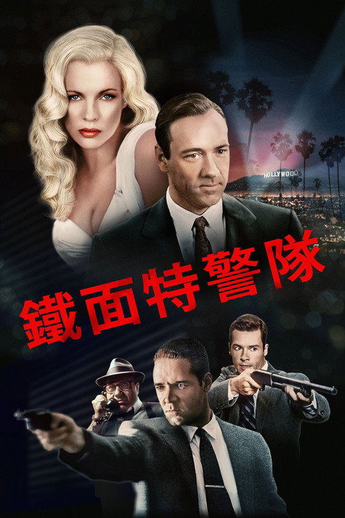
洛城机密 L.A. Confidential
「有些人宁愿要真相，有些人宁愿要故事。」
剧情梗概
1950 年代的洛杉矶。三名警察被卷进同一桩咖啡厅枪杀案：埃德·埃克斯利是个靠规矩往上爬的「好警察」，巴德·怀特是个用拳头解决问题的打手，杰克·文森斯则靠给八卦杂志当线人赚外快。三个人各查各的，最后撞进同一张网里——而这张网的上端，连着警局自己。
亮点
- 第 70 届奥斯卡拿下最佳女配角（金·贝辛格）与最佳改编剧本，共获九项提名；当年的最佳影片输给了《泰坦尼克号》。
- 改编自詹姆斯·艾尔罗伊的同名小说，是他「洛杉矶四部曲」的第三部——他把这座城市写成了全片最大的那个角色。
- 柯蒂斯·汉森与编剧布莱恩·海尔格兰德花了两年改剧本，把原著五百多页的三条主线压成 138 分钟，几乎是改编的教科书。
- 三个主演当时都不是明星：罗素·克劳还是澳洲新人，盖·皮尔斯刚拍完《沙漠妖姬》，金·贝辛格接的角色几乎没人看好。
- 烂番茄 99% / Metacritic 90，是 1990 年代评分最高的犯罪片之一，也是「新黑色」（neo-noir）复兴的标志。
- 片中那些八卦杂志、好莱坞派对与「体面」的腐败全有现实原型：1950 年代的洛杉矶警局确实与八卦媒体存在共生关系。
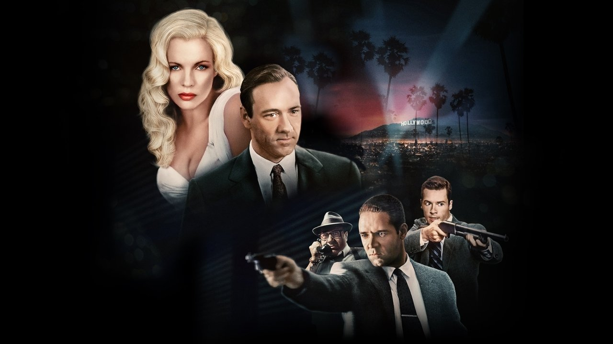
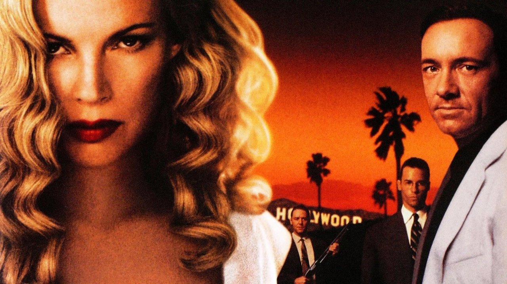
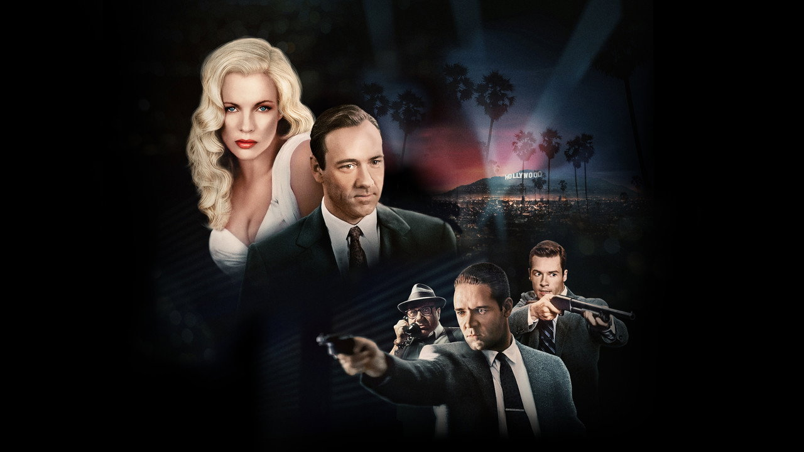
导演与主创 · 他们的历史作品
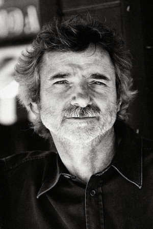
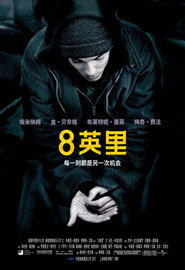
8英里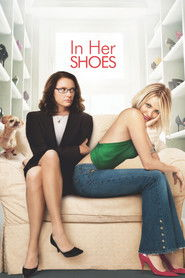
偷穿高跟鞋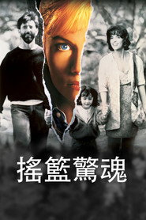
推动摇篮的手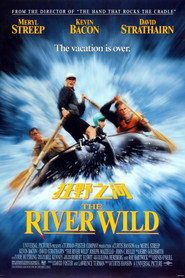
狂野之河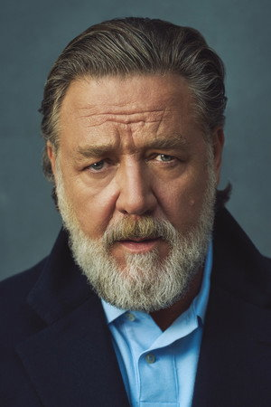
 角斗士
角斗士 美丽心灵
美丽心灵 耐撕侦探
耐撕侦探 诺亚方舟：创世之旅
诺亚方舟：创世之旅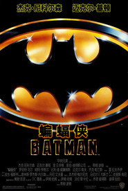
蝙蝠侠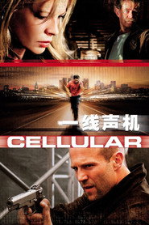
一线声机 五十度飞
五十度飞短评（轻微剧透）
《洛城机密》讲的是「体面」有多贵。三个警察各有一种活法：埃克斯利用规矩换前途，怀特用暴力换正义感，文森斯用名声换钱。他们互相看不起，直到发现案子背后其实是一台「卖故事」的机器——有人专门制造丑闻，再有人去破案，再由媒体写成头条。轻微剧透：真正的转折是埃克斯利意识到，父亲当年那个英雄故事其实是被包装出来的。于是他做了一个和前面完全相反的选择：不再要故事，要真相。代价是他失去了所有人。结尾那句「有些故事值得讲」的旁白，汉森把它拍成了一句反话——这座城市最不缺的就是好听的故事。
为什么值得一看
想看新黑色电影里最完整的一部的人；喜欢《唐人街》《老无所依》这类「城市本身就是反派」的观众。含暴力、枪战与性暗示议题，节奏偏慢但线索极密。内地未映，流媒体可看。
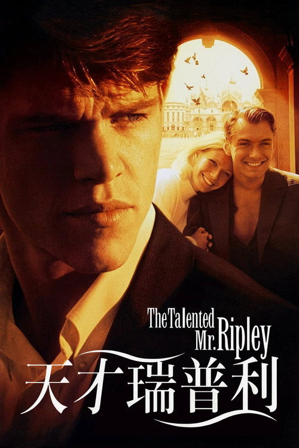
天才瑞普利 The Talented Mr. Ripley
「我想成为他。」
剧情梗概
1950 年代，纽约青年汤姆·瑞普利靠借来的 Princeton 外套混进一场派对，被船王格林利夫误认成儿子的同学，于是被派去意大利把不肯回家的儿子迪基带回来。到了意大利，汤姆没有把迪基带回去——他想成为迪基。
亮点
- 安东尼·明格拉自编自导，改编自派翠西亚·海史密斯的同名小说（「瑞普利系列」第一部）。
- 1999 年奥斯卡五项提名：最佳改编剧本、最佳男配角（裘德·洛）、最佳原创配乐、最佳艺术指导、最佳服装设计。
- 马特·达蒙为了演汤姆减重约 12 公斤，还专门学了钢琴；他当年 29 岁，演的却是一个二十出头的年轻人。
- 裘德·洛凭迪基一角拿下英国电影学院奖最佳男配角并入围奥斯卡——这是他真正被国际看见的一次。
- 全片最美的部分在意大利：明格拉把它拍成一幅可以穿进去的画，越往后越像一件被剥下来的皮。
- 豆瓣 8.2 / 烂番茄 84%，是海史密斯小说改编里评价最高的一部；IMDb 7.3 稍低，主要因为节奏偏慢。
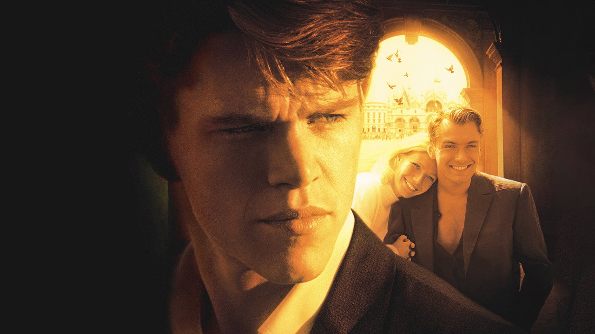
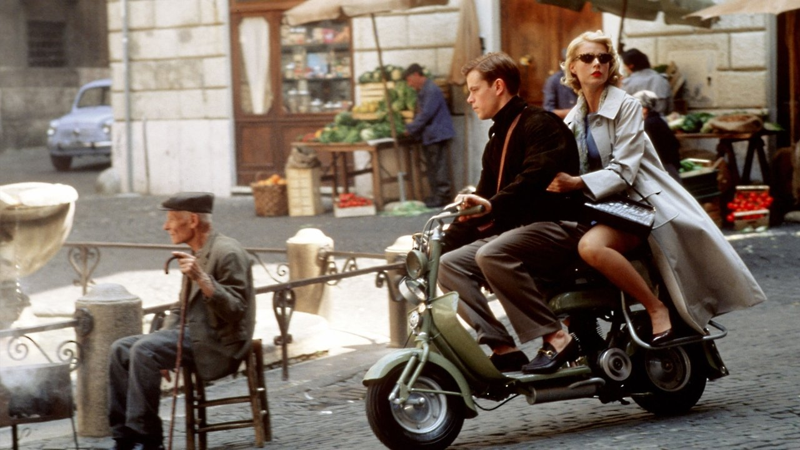
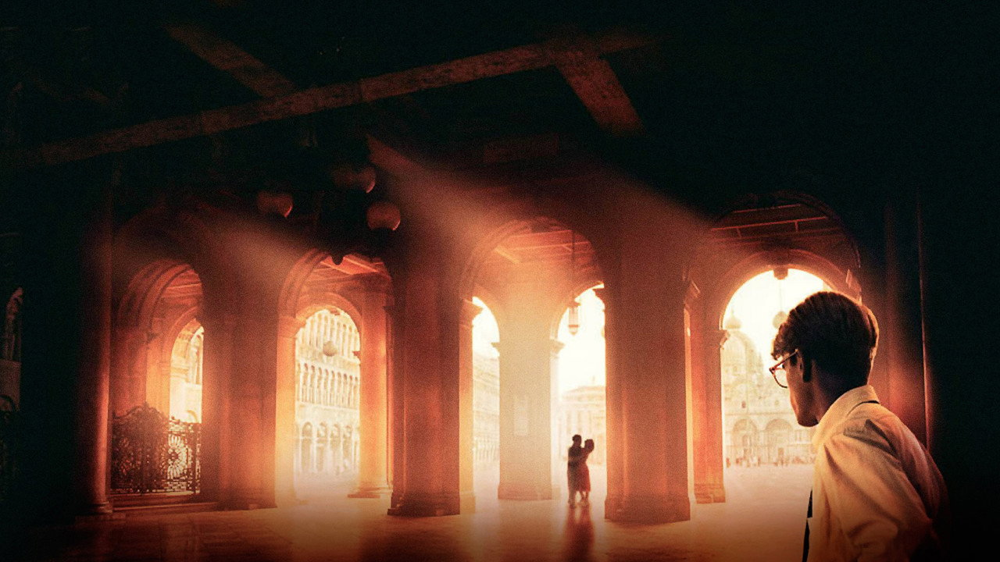
导演与主创 · 他们的历史作品
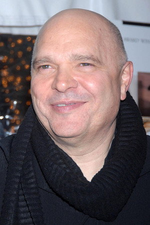
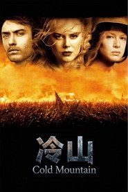
冷山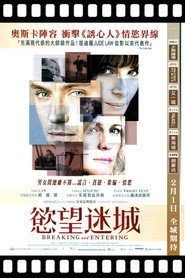
解构生活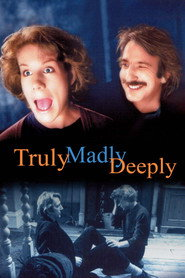
未了阴阳情
 大侦探福尔摩斯
大侦探福尔摩斯 大侦探福尔摩斯2：诡影游戏
大侦探福尔摩斯2：诡影游戏 惊奇队长
惊奇队长 兵临城下
兵临城下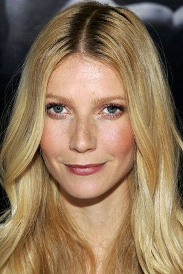
 钢铁侠3
钢铁侠3 钢铁侠2
钢铁侠2 七宗罪
七宗罪 钢铁侠
钢铁侠短评（轻微剧透）
《天才瑞普利》最可怕的地方是它让你站在一个骗子这边。汤姆一开始只是个蹭吃蹭喝的小人物，他撒的第一个谎没有任何恶意；等他发现「成为迪基」比「做汤姆」容易得多，就再也停不下来了。明格拉一直在拍「看」：汤姆看迪基跳舞、看他穿他的衣服、看他和玛吉在一起，然后开始模仿。轻微剧透：真正的转折在那条小船上。那不是预谋杀人，是一次被戳穿之后的下意识反应——他杀掉迪基的那一刻，其实是在杀掉「自己成不了他」这件事。之后他活得像一个永远在对口型的演员：穿迪基的衣服、用迪基的签名、替迪基活着。结尾他在船舱的镜子里看着自己，没有人知道他是谁。这是全片最冷的一刀：他得到了一切，也彻底没有了自己。
为什么值得一看
想看一部关于嫉妒与身份的惊悚片的人；喜欢欧洲慢调、以及《消失的爱人》这类心理博弈的观众。含殴打与杀人画面、身份冒用议题，节奏舒缓但压迫感持续。内地未映，流媒体可看。
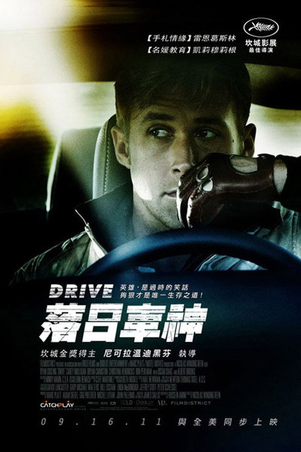
亡命驾驶 Drive
「我只是个开车的。」
剧情梗概
一个没有名字的男人（片尾字幕只写 Driver），白天在修车厂做工、给电影做特技替身，晚上给劫匪当逃逸司机，规矩只有一条：五分钟，只管开车。他爱上了隔壁的单亲妈妈艾琳。艾琳的丈夫出狱后欠了一屁股债，他决定为了她破一次自己的规矩。
亮点
- 尼古拉斯·温丁·雷弗恩凭此片拿下第 64 届戛纳电影节最佳导演。
- 改编自詹姆斯·萨利斯 2005 年的同名小说，剧本由《前程似锦的女孩》编剧霍辛·阿米尼执笔。
- 瑞恩·高斯林在 100 分钟里说的台词加起来不到 20 分钟，很多场戏只有一个眼神。
- 开场那十分钟的车戏全车实拍、没有 CG；导演要的是「让观众觉得自己也在车里等人」。
- 配乐由克里夫·马丁内斯操刀，合成器音色加 80 年代欧陆节拍；片尾曲是 "A Real Hero"。
- 口碑分裂得很有意思：影评界（烂番茄 93%）把它当成 2010 年代最重要的类型片之一，而豆瓣 7.8、IMDb 7.8——冲着文艺片来的人被沉默劝退，冲着动作片来的人被慢节奏劝退。
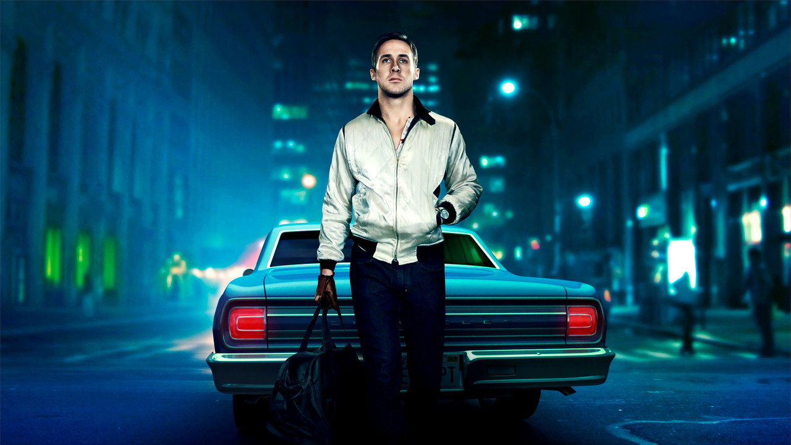
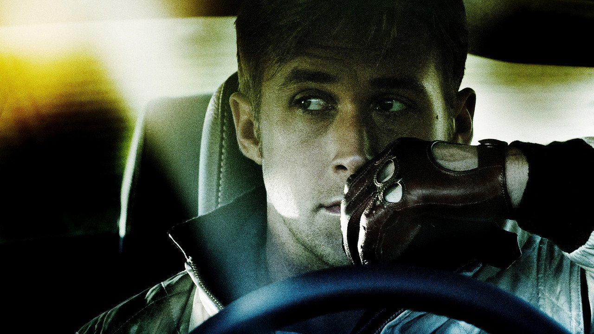
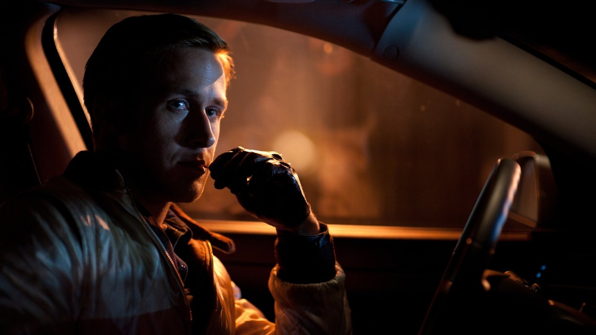
导演与主创 · 他们的历史作品
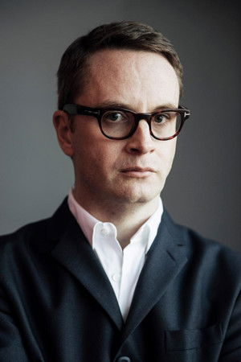
 霓虹恶魔
霓虹恶魔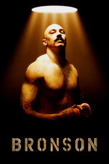
布朗森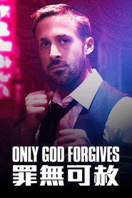
唯神能恕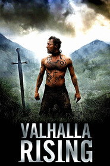
日出英烈祠
 爱乐之城
爱乐之城 银翼杀手2049
银翼杀手2049 恋恋笔记本
恋恋笔记本 挽救计划
挽救计划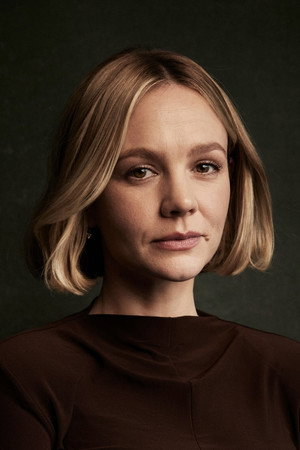
 了不起的盖茨比
了不起的盖茨比 前程似锦的女孩
前程似锦的女孩 傲慢与偏见
傲慢与偏见短评（轻微剧透）
《亡命驾驶》是一部关于「规矩」的片。Driver 给自己定的规则（五分钟、不问货、不动手）是他唯一能控制的东西，所以当他为了艾琳破戒的那一刻，结局就已经写好了。轻微剧透：真正的转折在中段那场电梯戏——他第一次当着别人的面做了一件完全不像自己的事，那不是暴力，是一个吻；镜头紧接着切到血。雷弗恩在这里把浪漫和残忍接成了同一个动作。后面所有的暴力都不是复仇，是清理：他要把自己重新塞回那个没有名字的壳里。结尾他开车离开，副驾驶空着，车继续往前开。他不幸福，但他回到了自己的规则里。
为什么值得一看
想看「极简 + 极狠」类型片的人；能接受大量静默、暴力突然且不加缓冲的观众。含严重暴力与血腥（爆头、利器），情绪极冷。内地未映，流媒体可看。
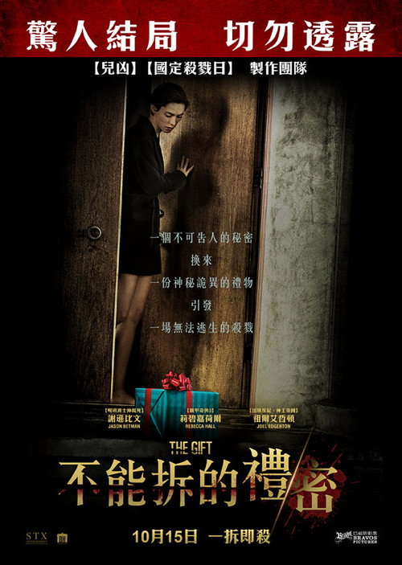
致命礼物 The Gift
「我只是想跟你们重新认识一下。」
剧情梗概
西蒙与罗宾夫妇搬回西蒙的故乡加州，住进一栋大房子。某天在超市遇到西蒙的高中同学戈多，戈多开始不断送礼：一箱酒、几条锦鲤、一盒杯子蛋糕。罗宾觉得不对劲，西蒙只说他是个怪人。直到他们发现，戈多送的每一样东西都对应着一件西蒙不愿提起的旧事。
亮点
- 乔尔·埃哲顿自编自导自演（他演戈多），这是他的导演处女作。
- 杰森·贝特曼此前以喜剧角色（《发展受阻》《恶老板》）闻名，本片是他第一次演「不好笑的混蛋」。
- 成本 500 万美元，全球票房超过 5000 万；是 STX Entertainment 发行的第一部电影。
- 全片没有一惊一乍的音效，压迫感全部来自「礼貌」——戈多每一次出现都在笑、都在道歉、都在送礼。
- 丽贝卡·豪尔演的罗宾是全片的视角人物：她先相信丈夫，再怀疑丈夫，最后发现真正该怕的是自己嫁错了人。
- 结尾没有清算，只有一个电话和一句「你从来没有问过我为什么」。这是它和一般复仇惊悚片最大的区别。
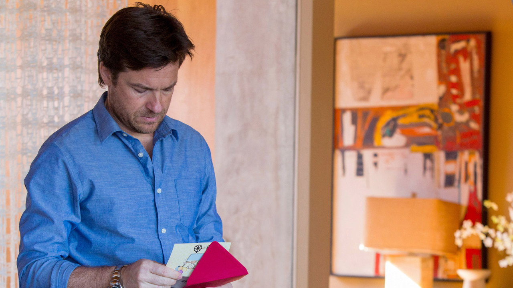
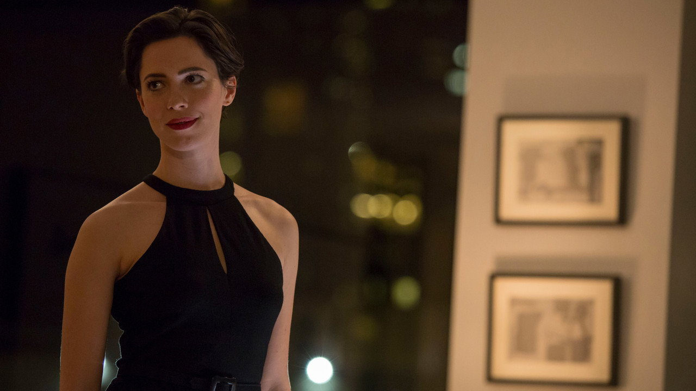
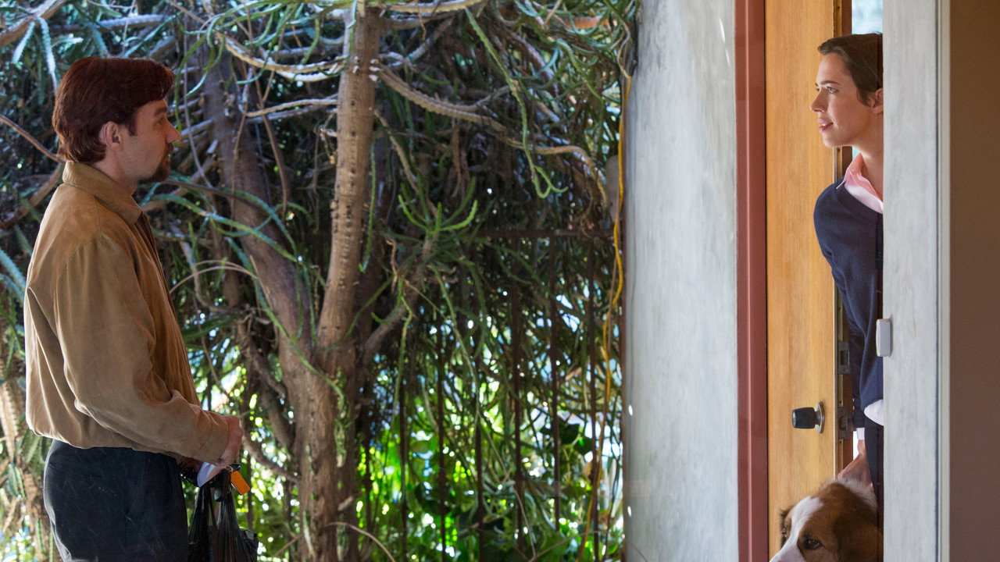
导演与主创 · 他们的历史作品

 勇士了不起的盖茨比
勇士了不起的盖茨比 红雀
红雀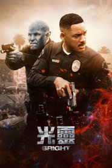
光灵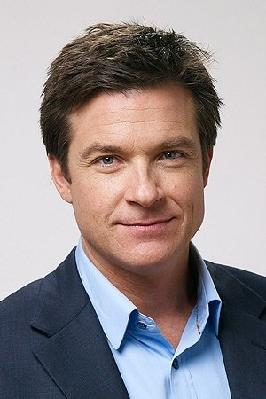
 疯狂动物城
疯狂动物城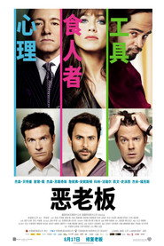
恶老板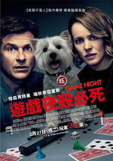
游戏之夜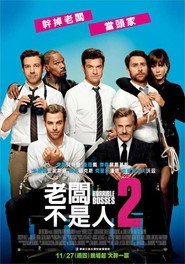
恶老板2
 哥斯拉大战金刚
哥斯拉大战金刚 哥斯拉大战金刚2：帝国崛起钢铁侠3
哥斯拉大战金刚2：帝国崛起钢铁侠3 致命魔术
致命魔术短评（轻微剧透）
《致命礼物》最难受的不是「有人来报复」，而是「报复是对的」。前半段你以为戈多是那种甩不掉的怪人，中段一个细节翻盘：戈多的外号是西蒙当年带头起的，那场「恶作剧」把一个十几岁的孩子送进了崩溃。剩下的时间，电影一直在问罗宾一件事——你到底嫁了个什么样的人？轻微剧透：结尾那场报复并没有发生。戈多站在门口，让西蒙自己把话说出来，然后转身走掉。真正的惩罚是罗宾站在原地，看着丈夫承认了一切。埃哲顿把整部片拍成了一次礼貌的处刑。
为什么值得一看
想看心理惊悚而不是血腥惊悚的人；喜欢《消失的爱人》《致命诱惑》这类「身边人不简单」的观众。无大尺度血腥，含校园霸凌议题与持续的心理压迫。内地未映。
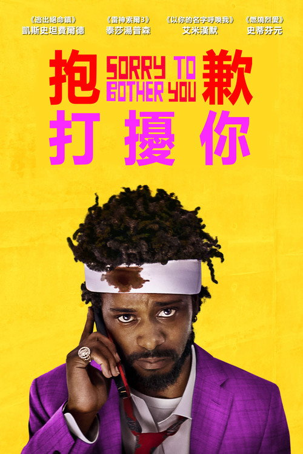
对不起，打扰你了 Sorry to Bother You
「你得用白人的声音说话。」
剧情梗概
奥克兰，卡修斯·格林找不到工作，靠叔叔介绍进了一家电话推销公司。同事告诉他一个秘密：把声音换成「白人声音」，业绩会立刻起飞。他照做了，升职、加薪、搬进好公寓——然后被调进公司顶层的那间办公室，那里正在卖一种别的东西。
亮点
- 布茨·赖利的导演处女作；他此前是嘻哈乐队 The Coup 的主唱，写了二十年政治说唱。
- 2018 年圣丹斯电影节首映后被 Annapurna 买下；成本约 300 万美元，全球票房超过 1800 万。
- 「白人声音」的处理是：演员本人说台词，后期由白人演员配音，口型故意对不上——这个刻意的不协调既是笑点也是痛点。
- 拉基思·斯坦菲尔德（《逃出绝命镇》《利刃出鞘》）与泰莎·汤普森（《雷神3》《湮灭》）是这部片的两根支柱。
- 结尾那二十分钟是近年美国电影里最疯狂的转折之一：它从一部职场讽刺片直接变成身体恐怖片，很多人看到这里才知道自己看了什么。
- 口碑：烂番茄 93% / Metacritic 81，影评界几乎一致好评；豆瓣 7.6 / IMDb 7.1，普通观众对最后那场戏的接受度明显更低。
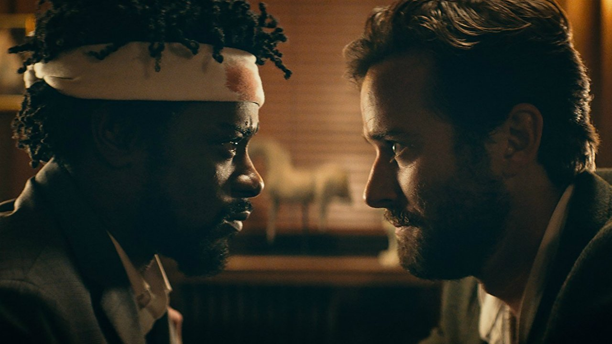
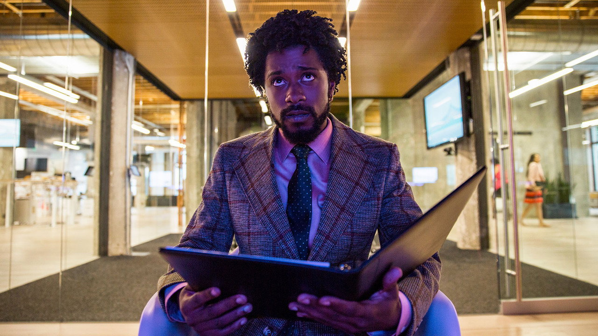
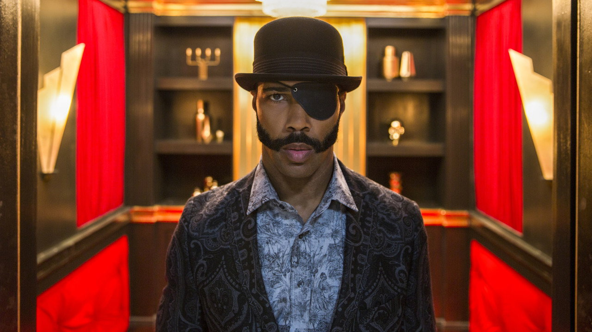
导演与主创 · 他们的历史作品
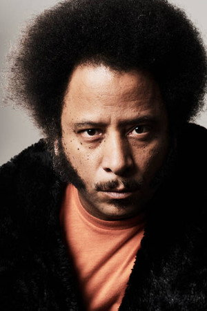
 贼爱时尚
贼爱时尚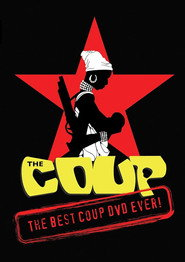
The Coup 精选 DVD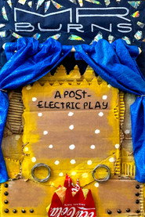
Mr. Burns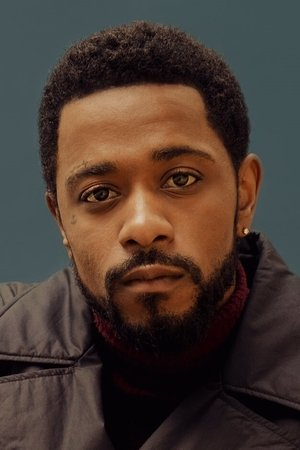
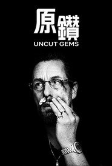
原钻 逃出绝命镇
逃出绝命镇 死亡笔记
死亡笔记 利刃出鞘
利刃出鞘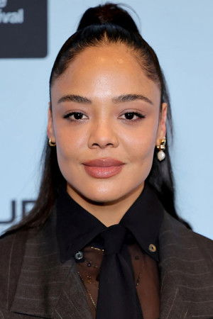
 雷神3：诸神黄昏
雷神3：诸神黄昏 奎迪
奎迪 湮灭
湮灭短评（轻微剧透）
《对不起，打扰你了》前半段是一部很尖的职场喜剧：一个黑人小伙发现只要模仿白人说话就能升职，于是他开始「演」一个自己。赖利的高明之处在于他没让这件事变成道德说教——卡修斯确实赚到了钱，也确实被同事们排挤，这两件事同时成立。轻微剧透：真正的转折在公司顶层。那家公司真正在卖的不是电话服务，而是「把人改造成更适合劳动的东西」。最后二十分钟从讽刺片直接坠进身体恐怖，很多人受不了这个转弯，但赖利要的正是这个：你以为你在看一部喜剧，其实你一直在看一桩正在进行的改造。结尾那群「马人」冲进别墅，是全片唯一一次真正的暴动。
为什么值得一看
想看「用科幻设定写阶层与种族」的观众；喜欢《逃出绝命镇》《龙虾》这类荒诞设定的观众。含粗口、暴力与身体恐怖画面，后半段转折很猛。内地未映，流媒体可看。

寂静之地 A Quiet Place
「别出声。」
剧情梗概
近未来，地球被一种没有眼睛、靠声音捕猎的生物占领。一家五口住在农场里，赤脚走路、用手语对话、沿着铺了沙子的路走。女儿瑞根是聋人，戴着人工耳蜗。母亲伊芙琳又怀孕了。
亮点
- 约翰·卡拉辛斯基自导自演，成本 1700 万美元，全球票房超过 3.4 亿美元。
- 米莉森·西蒙斯本人就是聋人，她坚持在片中用真正的手语演出，也要求角色的耳蜗是真的。
- 全片对白极少，声音设计是真正的主角；2019 年获奥斯卡最佳音效剪辑提名。
- 内地 2018 年 5 月 18 日公映，拿下超过 2 亿元票房——一部恐怖片在内地拿到这个数字相当少见。
- 拍摄地是纽约州北部的一座真实农场，那片玉米地是为了这部片临时种的。
- 口碑在国内偏保守（豆瓣 7.3），海外却几乎一片好评（烂番茄 96%）：分歧点在于有人把它当怪物片看，而它其实是一部家庭片。
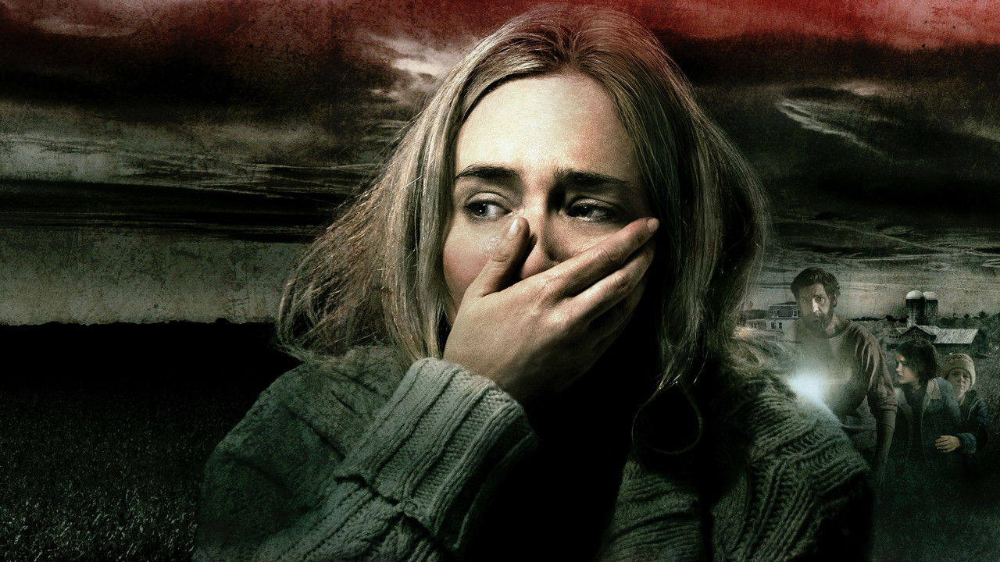
导演与主创 · 他们的历史作品
 危机13小时
危机13小时 寂静之地2寂静之地2寂静之地2
寂静之地2寂静之地2寂静之地2短评（轻微剧透）
《寂静之地》最聪明的地方是：它把恐怖片最廉价的手段（突然的巨响）变成了全片的禁忌。因为角色不能出声，声音本身成了剧情——每一次差点碰到东西，你都会跟着屏住呼吸。轻微剧透：真正的核心不是怪物，是瑞根的耳蜗。父亲一直没能修好它，女儿觉得是自己没用；最后一个镜头里，她把耳蜗对准怪物、把高频啸叫放到最大——这个家里最「残缺」的人，恰恰是唯一能反杀的人。卡拉辛斯基用 90 分钟讲了一件事：一家人如何在不能说话的情况下继续相爱。结尾那句手语「我会保护你」，是这几年恐怖片里少见真的让人鼻子一酸的时刻。
为什么值得一看
想看「设定极简、执行极狠」的恐怖片的人；喜欢《它在身后》这类规则型恐怖的观众。含怪物袭击、受伤流血等惊吓画面，紧张度极高。内地 2018 年引进过。
太空生活 High Life
「我们都是死刑犯，只是不知道日期。」
剧情梗概
一艘飞船正朝着一个黑洞飞去，船上是十几个被判死刑的囚犯——他们被送去执行一项「不可能返回」的任务。船上有一间叫 the Box 的房间，用来做人工授精实验。多年之后，飞船上只剩下一个男人和一个女婴。
亮点
- 克莱尔·德尼的第一部英语片，也是她的第一部科幻片；剧本与让-波尔·法尔戈、作家尼克·莱尔德共同完成。
- 灵感来自德尼读到「死刑犯自愿参与太空实验」的设想之后，决定把它拍成一部关于生育与孤独的片。
- 罗伯特·帕丁森为了这部片推掉了大片邀约，他说这是他接到过「最不像电影的剧本」。
- 全片几乎没有靠对话推进情节，靠的是飞船内部的声音（通风、金属、水）与反复出现的同一段监控画面。
- the Box 那场戏是全片最受争议的一段：德尼把它拍成纯粹的机械过程，没有任何浪漫化处理。
- 口碑分裂得很彻底：烂番茄 82% / Metacritic 76，影评界称它是太空类型片的一次重塑；豆瓣 6.6 / IMDb 6.1，普通观众大量给出「沉闷」与「不知所云」。
导演与主创 · 他们的历史作品
 哥斯拉
哥斯拉 攻壳机动队
攻壳机动队短评（轻微剧透）
《太空生活》把科幻片最常回避的两件事摆到了台面上：性和排泄。船上的人不是英雄，是一群被判了刑、拿命换一次「可能减刑」的囚犯；他们被关在一个铁盒子里，唯一的研究项目是生育。德尼没有拍太空奇观，她拍的是一具身体在密闭空间里怎么活着。轻微剧透：真正的转折来自那台机器——它不提供安慰，只提供重复。蒙特最后带着女儿靠近黑洞，那不是逃亡，是接受。全片最重的一场戏是父亲给女儿剪头发：一个杀人犯，在做一件完全温柔的事。德尼用一艘飞船写了一件事——人可以在最坏的条件下，仍然选择照顾另一个人。
为什么值得一看
想看「太空片还能拍成什么样」的人；喜欢《飞向太空》《潜行者》这类哲学科幻的观众。含性场面、暴力与身体恐怖画面，节奏极慢、叙事断裂。内地未映。
原钻 Uncut Gems
「这就是我赢的方式。」
剧情梗概
霍华德·拉特纳是纽约钻石区的一名珠宝商，欠了一屁股债。他从埃塞俄比亚搞到一块罕见的紫水晶原石，认定它能拍出百万美元；与此同时，凯尔特人球星凯文·加内特看上了它。霍华德把石头抵押、拍卖、再抵押，把每一笔钱押在下一场球赛上。
亮点
- 本·萨弗迪与约书亚·萨弗迪兄弟自编自导自剪，这是他们第一次让大明星主演。
- 亚当·桑德勒凭此片横扫多个影评人协会的最佳男主角，却连奥斯卡提名都没拿到，是当年最大的争议之一。
- 凯文·加内特本色出演；片中那场关键比赛用的是 2012 年凯尔特人季后赛的真实录像。
- 全片 135 分钟几乎没有一场安静的戏——叠加对白、手持跟拍、连续变焦，把焦虑直接拍成了节奏。
- 配乐由丹尼尔·洛帕廷（Oneohtrix Point Never）创作，合成器音墙加环境噪音，被很多人列为 2019 年最佳。
- Metacritic 90 分，是 A24 出品里评分最高的一批；豆瓣 7.5 的落差主要来自国内观众对「全程吵闹」的接受度。
导演与主创 · 他们的历史作品
短评（轻微剧透）
《原钻》从头到尾只讲一件事：一个人怎么把每一秒都拿来赌。霍华德不是坏人——他爱家人、会做生意、对员工也不差，问题是他永远觉得下一把就能翻盘。全片最狠的设计是它不给任何一个「赢」的时刻：每一次他刚喘过气，下一个麻烦就推门进来了。轻微剧透：结尾那场，他被逼到绝路、把石头送出去、然后赢了一大笔钱——下一个镜头，讨债的人已经站在玻璃门外。萨弗迪兄弟连让你爽两分钟都不给。最后那颗原石被切开：紫色、红色、绿色，一层一层。那是全片唯一安静的镜头，也是唯一的答案——所有赌徒心里都有一块这样的石头，好看得要命，里面全是杂质。
为什么值得一看
想看「焦虑被拍成动作片」的人；能接受 135 分钟不停吵闹、主角毫无可爱之处的观众。含暴力、大量粗口与性内容，紧张度极高。内地未映，流媒体可看。
钛 Titane
「别碰我。」
剧情梗概
阿莱克西娅在一场车祸后颅骨里被植入了一块钛板。成年后她是车展上的舞者，也是一名连环杀手。一次逃亡中，她伪装成一个失踪多年的男孩，被消防队长文森特认作自己的儿子带回队里。而这个身体，正在因为她怀上的东西发生变化。
亮点
- 朱利亚·迪库诺凭此片拿下第 74 届戛纳金棕榈——史上第二位独立获得金棕榈的女性导演（第一位是《钢琴课》的简·坎皮恩，1993）。
- 她的长片处女作《生吃》(2016) 已经在戛纳影评人周拿下费比西奖，本片是第二部。
- 文森特·林顿演的消防队长是全片另一个核心：一个靠注射药物维持身体的人，也是唯一一个不问「你是谁」的人。
- 阿加莎·罗塞勒首次主演长片，她为这个角色训练了大量肢体动作；片中几乎所有情绪都靠身体而不是台词。
- 全片把「车」和「人」焊在一起：开场是车展上的舞蹈，中段有一场人与车的戏，结尾的分娩被拍成机械过程。
- 口碑两极得非常彻底：戛纳全场起立、烂番茄 90%，而豆瓣 7.4 / IMDb 6.6，普通观众大量给出「看不懂」和「生理不适」。
导演与主创 · 他们的历史作品
短评（轻微剧透）
《钛》讲的是「身体不再属于自己」，被推到最极端。阿莱克西娅从一块钛板开始——金属进了她的头，性、暴力、杀戮都从那里长出来。她逃亡时把头发剪掉、把胸部勒平、把鼻子打断，变成另一个人；而她的身体同时在往完全相反的方向走。轻微剧透：真正的转折是文森特。他没有识破她，或者说他选择不识破——他要的是一个儿子，哪怕这个儿子是假的、是坏的、是金属做的。最后那场分娩不是恐怖，是慈悲：一个男人抱着一个钛做的婴儿说「我在这里」。迪库诺把整部片拍成了一次粗暴的接生——血、机油、金属，和一个终于有人接住的怪物。
为什么值得一看
想看法式极端电影在二十一世纪的样子的人；能接受身体恐怖、性与暴力混合画面的观众。含强烈血腥、自残与性场面，生理不适风险高，请斟酌。内地未映。
利益区域 The Zone of Interest
「墙那边的事，我们不看。」
剧情梗概
1943 年，奥斯维辛集中营指挥官鲁道夫·霍斯一家就住在集中营隔壁的一栋房子里。妻子海德薇格打理花园、试穿皮草、招待朋友；孩子们在院子里游泳。墙的另一边是焚化炉。全片没有一秒进入集中营内部。
亮点
- 乔纳森·格雷泽自编自导，改编自马丁·艾米斯的同名小说；他花了近十年做研究和筹备。
- 第 96 届奥斯卡拿下最佳国际影片与最佳音效，并入围最佳影片、最佳导演、最佳改编剧本。
- 拍摄用的是霍斯故居原址，剧组按史料重建了花园与围墙；摄影机全部固定在房间里，从不越墙。
- 声音是本片真正的主角：枪声、犬吠、火车、机械运转，几乎全部是画外音；声音团队整理了一份数百页的清单。
- 全片用隐藏机位拍摄，演员常常不知道自己在哪个镜头里——格雷泽在隔壁房间用监视器看戏，不进片场。
- 片尾有一段真实画面：今天的奥斯维辛博物馆里，清洁工正在擦展柜。
导演与主创 · 他们的历史作品

 性感野兽
性感野兽 重生
重生 坠落（短片）
坠落（短片） 极速赛车手
极速赛车手短评（轻微剧透）
《利益区域》最恐怖的地方是它什么都没拍。你从头到尾没有看到一个集中营内部的镜头——只有一堵墙，和墙那边持续不断的声音。霍斯一家在墙这边讨论菜谱、试衣服、给孩子过生日，声音设计把那些枪响和惨叫变成日常背景。轻微剧透：全片仅有的几次「越界」是几段热成像画面（一个波兰女孩夜里往工地里藏苹果），以及霍斯在楼梯上突然干呕。格雷泽的答案是：不要用影像去再现，因为一再现，观众就能松一口气。真正的处理在声音和「不拍」——你要一直站在那家人的客厅里，一直听着。最后那段现代博物馆的画面把时间拉回今天：清洁工擦玻璃、摆鞋子。恐怖没有结束，它只是换了形式。
为什么值得一看
想看「大屠杀题材还能怎么拍」的人；能接受极度克制、几乎没有情节、靠声音推进的观众。无直接暴力画面，但声音与主题的压力极大。内地未映。